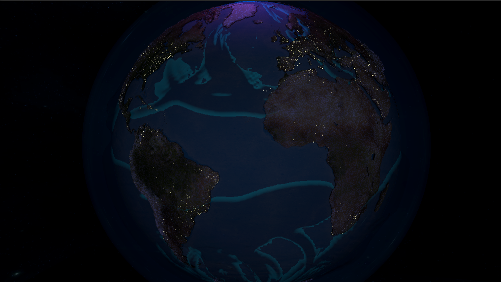
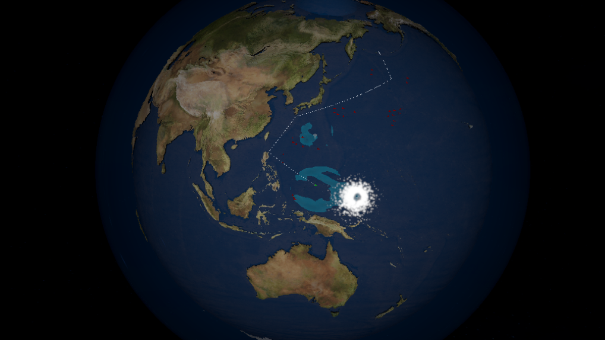

Professor Maren & The Aqueous Stones was my solo submission to the University of Delaware's Climate Change Game Jam. The game incorporates a Compute Shader fluid simulation of ocean waves on a globe earth. The player plays as an Ocean Spirit tasked with defending the protagonist, Professor Maren, in her quest to assemble the aqueous stones, a supposed "Silver Bullet" against climate change. Each level gives the player a finite amount of energy charges to spend to summon waves, waterspouts, whirlpools, and hurricanes. This game was made over the two week jam period using Unity, and won "Best Overall Game" in the jam!
Professor Maren & The Aqueous Stones
Ocean defense jam game where you smite your foes with inclement weather.
Visit The Itch.io Page To Download

